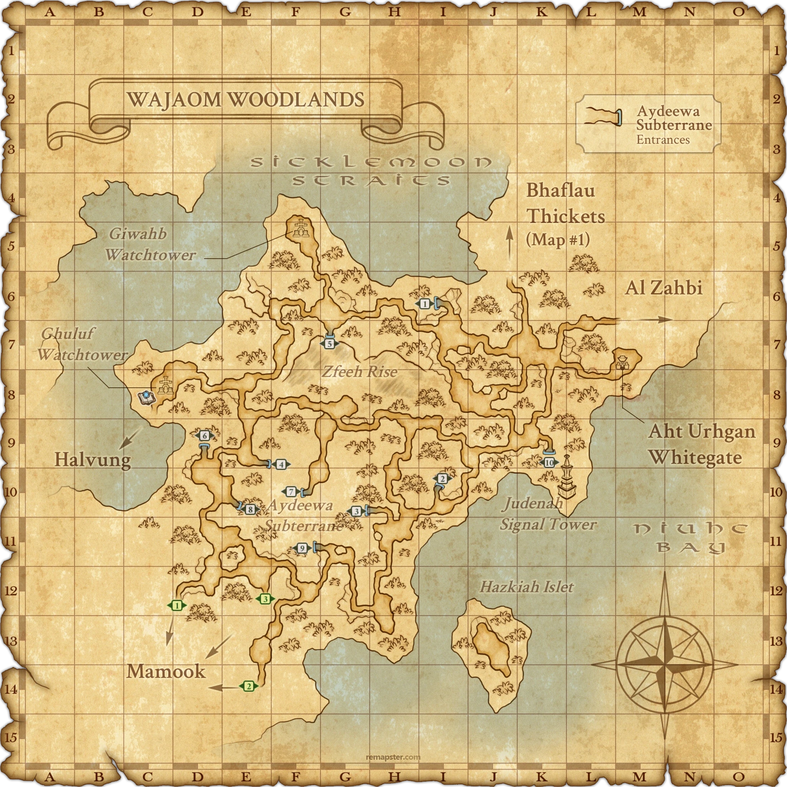

Level 75 reference · Zenith rules
|
Job: |
|
| Zone | Level | Drops | Steal | Spawns | Notes |
|---|---|---|---|---|---|
| Wajaom Woodlands |
~78 |
|
1 | A, L, S, H ~15,000 HP | |
|
HP = Detects Low HP; M = Detects Magic; Sc = Follows by Scent; T(S) = True-sight; T(H) = True-hearing JA = Detects job abilities; WS = Detects weaponskills; Z(D) = Asleep in Daytime; Z(N) = Asleep at Nighttime | |||||
Notes


Image source
- Spawned by trading a Hellcage Butterfly to the ??? at (D-10) in Wajaom Woodlands.
- The correct ??? reads Broken shards of insect wing are scattered all over... when examined.
- Killable by 2+ level 75 players. (see testimonials)
- High base damage. Melee hits can do 200-300 damage, 500 critical hits.
- Can be main tanked easily by a well-equipped PLD/WAR using defense armor & food. Melee hits will do only 100~125 damage and Wind Shear only does ~200 points damage.
- Can easily be tanked by Garuda as well.
- Wind Shear is extremely powerful. It also adds a heavy Gravity effect.
- As health decreases, Wind Shear's damage increases.
- Damage dealers should use Ninja sub to absorb Wind Shear. Ninja sub also recommended for mages. Blink and Stoneskin may not save mages hit by Wind Shear.
- Because Wind Shear can one-shot a NIN or PLD/NIN, a backup tank can be helpful.
- All melees should stand with their backs to the wall next to the ??? and face East to avoid knockback from Wind Shear. If knockback lands, Weight can be so severe you will not make it back to the monster before its next Wind Shear.
- Ill Wind is more powerful on Darksday.
- Uses White Wind to cure itself, more often as its HP decreases. White Wind is AoE and also heals nearby Puks
- Absorbs Elemental Magic matching the day of the week. Drain on Darksday heal both the caster and the target.
- Vulpangue always absorbs Wind Elemental Magic, regardless of the day of the week.
- Level 70 physical blood pacts deal normal damage no matter the day. Level 75 merit blood pacts heal Vulpangue on the same elemental day.
- Immune to Sleep and Gravity.
- Gradually builds resistance to Bind.
- Susceptible to Paralyze, Slow, and Blind.
- Accuracy and attack speed increase as HP decreases.
Adapted from Eden Wiki: Vulpangue · Contributors and history · CC BY-SA 4.0. Revision 42336. Layout, links and optional background text adapted for Zenith.